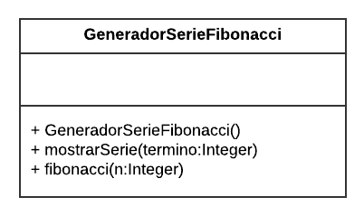
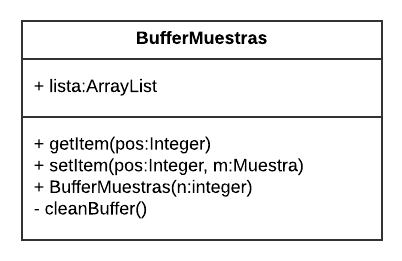
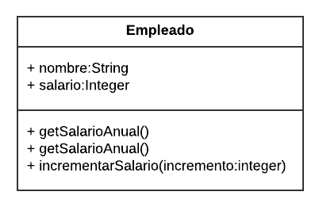
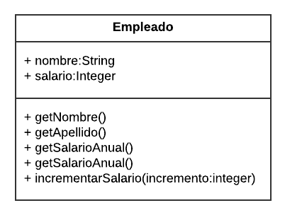

xxxxxxxxxx121public Class Matriz{2 3 private int matriz[][];4 5 public void Matriz(int n, int m){6 matriz = new int[n][m];7 }8 9 public int getValor(int x, int y){10 return matriz[x][y];11 } 12}
La sucesión de Fibonacci es una sucesión definida por recurrencia. Los números de Fibonacci quedan definidos por las siguientes ecuaciones para n>=0:
Implemente una clase que represente un generador de términos de la serie de Fibonacci. El diseño de la clase se muestra en el siguiente diagrama UML:

Donde:
xxxxxxxxxx241public class GeneradorSerieFibonacci {2
3 public GeneradorSerieFibonacci() { // constructor vacio4 }5
6 public int fibonacci(int n) {7 if (n>1){8 return fibonacci(n-1) + fibonacci(n-2); //Llamada recursiva9 } else if (n==1) { // caso n=110 return 1; 11 } else if (n==0){ // caso n=012 return 0;13 } else{ //error14 System.out.println(" N debe ser => 0");15 return -1;16 } 17 }18
19public void mostrarSerie(int termino){20 for (int i = 0; i < termino; i++) { 21 System.out.print(fibonacci(i)+" ");22 }23 System.out.println(); 24}
¿Qué ocurriría si el método fibonacci (n) definido por la clase GeneradorSerieFibonacci se hiciera privado? ¿Se podría usar desde fuera de la clase?
Si el método de una clase es privado, solo se puede acceder a él desde la propia clase, así que no se podría usar desde fuera de la clase.
¿Afecta este cambio al método mostrarSerie (int termino)?
No afecta al método mostrarSerie (int termino) porque seguiria siendo publico y desde la propia clase podría llamar al método privado fibonacci (n).
Dada la siguiente codificación de la clase BufferMuestras, represéntela usando UML.
xxxxxxxxxx221import java.util.ArrayList;2
3public class BufferMuestras {4
5 ArrayList <Muestra> lista;6 7 public BufferMuestras(int n) {8 lista = new ArrayList<Muestra>(tam); // lista con tamaño n9 }10
11 private void cleanBuffer() { 12 lista.clear();13 }14
15 public Muestra getItem(int pos) {16 return lista.get(pos);17 }18
19 public void setItem(int pos, Muestra m) { 20 lista.add(pos, m);21 } 22}Solución:

Tomando la definición de la clase del ejercicio anterior, indique cuál sería su interfaz pública y cuál sería su interfaz privada.
Su interface pública sería:
Su interface privada sería:
Realice un análisis utilizando la técnica de tarjetas CRC sobre la siguiente definición textual de una clase:
«Una Cuenta Bancaria mantiene un saldo activo, un titular de cuenta, una fecha de apertura y una serie de comisiones asociadas. Además, la cuenta corriente mantiene una serie de domiciliaciones, que, llegada la fecha en la que están establecidas decrementan el saldo activo de la cuenta».
| - Mantener saldo activo - Mantener titular de cuenta - Mantener comisiones - Mantener domiciliaciones - Decrementar saldo |
- Titular - Domiciliacion - Comision |
xxxxxxxxxx101public class Circle {2 3 // atributos de clase 4 private double radius; 5 private String color;6 7 /*Construye una instancia círculo con los valores de color y radio por defecto8 Construye una instancia círculo con el valor de radio dado por parámetro 9 Devuelve el valor de radio10 Devuelve el valor del área*/
Solución:
xxxxxxxxxx261public class Circle {2 // atributos de clase 3 private double radius; 4 private String color;5
6 // Constructor7 public Circle() {8 radius = 1.0;9 color = "red";10 }11 12 // Instancia circulo13 public Circle(double r;) {14 radius = r;15 color = "red";16 }17 18 // Devuelve el valor del radio19 public double getRadius() {20 return radius;21 }22 23 // Devuelve el valor del area24 public double getArea() {25 return Math.PI*radius^2;26 }
Defina las instrucciones necesarias para llevar a cabo las siguientes acciones:
Crear un círculo de radio cinco.
xxxxxxxxxx11Circle circulo = new Circle(5);
Obtener el área del círculo anterior e imprimirla por pantalla.
xxxxxxxxxx11System.out.println(circulo.getArea());
Modificar el constructor para que admita como parámetro un valor de radio y un color.
xxxxxxxxxx41public Circle(double r; String c) {2 radius = r;3 color = c;4}
Añadir un método para que sea posible obtener el color de un círculo.
xxxxxxxxxx31public String getColor() {2 return color;3}
Dada la siguiente clase UML, implemente el método incrementarSalario (int inc), donde inc representa el incremento porcentual sobre el salario. Nota: el atributo salario representa el salario anual.

xxxxxxxxxx31public void incrementarSalario(int inc) {2 salario = salario * (inc/100);3}
